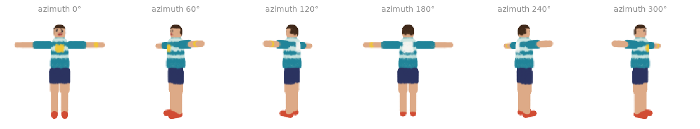
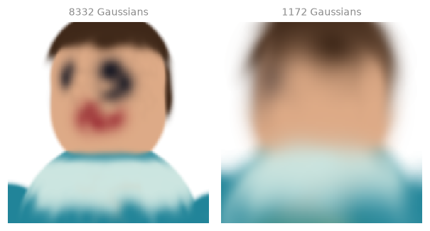
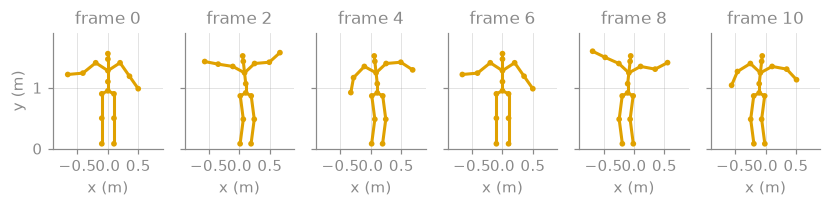
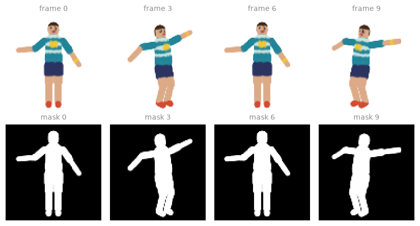

Setting up, and a first look at the toy world#
What you will learn
How to install the course and check that it runs on your machine.
What the toy world contains: a camera, a person made of capsules, and a video of that person.
How to render your first Gaussians, and how long things take on a CPU.
Prerequisites: Python, NumPy-style array code, and the basics of training a model with gradient descent. No graphics background is needed.
1. Install#
The course needs Python 3.10 or newer and a CPU. It does not need a GPU, a body-model licence or any download beyond the packages below.
python -m venv .venv && source .venv/bin/activate
pip install torch==2.8.0 --index-url https://download.pytorch.org/whl/cpu
pip install -r course/requirements.txt
python course/tests/run_tests.py # about 5 seconds; every test should pass
Each lesson is a text notebook. Open the .md file in JupyterLab with jupytext installed, or convert it with
jupytext --to ipynb <lesson>.md. To build the whole book, run jupyter-book build course/.
Every lesson starts with the same hidden cell. It finds the course_utils package, imports it as cu, applies
the figure style, limits PyTorch to four threads and seeds the random generator.
import sys, pathlib
_root = pathlib.Path.cwd().resolve()
while not (_root / "course_utils").is_dir() and _root != _root.parent:
_root = _root.parent
sys.path.insert(0, str(_root))
import math, time, torch, numpy as np, matplotlib.pyplot as plt
import course_utils as cu
cu.setup()
print("torch", torch.__version__, "| threads", torch.get_num_threads(), "| course_utils", cu.__version__)
torch 2.8.0+cu128 | threads 4 | course_utils 0.1.0
2. The toy world#
Real avatar pipelines start from camera footage of a person and from a licensed parametric body model. This course replaces both with things we can generate in a notebook:
a toy person: 17 capsules on a 17-joint skeleton, wearing a loose shirt, shorts and shoes;
a camera: an ideal pinhole camera;
a video: the toy person rendered in a sequence of poses, with a mask for every frame.
The conventions are fixed for the whole course. The world’s y axis points up, the person faces +z, and the person’s left is +x. Lengths are in metres.
actor = cu.ToyActor() # the ground-truth person
cam = cu.orbit_camera(azimuth_deg=0, size=128)
views = [actor.render(cu.orbit_camera(az, size=128))[0] for az in (0, 60, 120, 180, 240, 300)]
cu.show_images(views, [f"azimuth {az}°" for az in (0, 60, 120, 180, 240, 300)], size=1.9);
print("the actor is", actor.n_gaussians, "Gaussians on", cu.N_PARTS, "body parts and", cu.N_JOINTS, "joints")
the actor is 8332 Gaussians on 17 body parts and 17 joints

The person is drawn in its rest pose, a T-pose. The marks are there on purpose. The logo is on the front and the white print is on the back. The wristband is on the left arm only. If a fit ever mirrors the body or turns it around, these marks show it at once.
The actor is not a mesh. It is a cloud of small, flat, coloured blobs called Gaussians, and the picture is made by splatting them onto the image. Part 2 builds that renderer from nothing. For now, zoom in until the blobs show:
close = cu.look_at(eye=(0.25, 1.62, 0.9), target=(0.0, 1.60, 0.0), fov_deg=22, size=200)
sparse_actor = cu.ToyActor(density=450.0) # the same person with seven times fewer Gaussians
cu.show_images([actor.render(close)[0], sparse_actor.render(close)[0]],
[f"{actor.n_gaussians} Gaussians", f"{sparse_actor.n_gaussians} Gaussians"], size=2.8);

3. A pose, a motion and a video#
A pose is one rotation per joint, written as an axis-angle vector, plus a translation of the whole body. Part 3 explains how rotations travel down the skeleton. The motion library returns short sequences of poses.
print("motions:", ", ".join(cu.MOTIONS))
poses, trans = cu.motion("dance", n_frames=12)
print("poses", tuple(poses.shape), "= (frames, joints, 3) trans", tuple(trans.shape))
fig, axes = plt.subplots(1, 6, figsize=(9.0, 2.2), sharey=True)
for ax, t in zip(axes, range(0, 12, 2)):
_, joints = cu.forward_kinematics(poses[t], trans[t])
cu.draw_skeleton(ax, joints)
ax.set_aspect("equal"); ax.set_xlim(-0.9, 0.9); ax.set_ylim(0, 1.9); ax.set_title(f"frame {t}")
ax.set_xlabel("x (m)")
axes[0].set_ylabel("y (m)");
motions: turn, wave, arms_up, squat, walk, jump, dance
poses (12, 17, 3) = (frames, joints, 3) trans (12, 3)

A video is the actor rendered in each pose. cu.make_video also stores what a real pipeline has to estimate:
the mask of the person in every frame, the 2D joint positions, and the pose itself.
video = cu.make_video(actor, poses, trans, cam=cu.orbit_camera(0, size=96))
print("rgb", tuple(video.rgb.shape), "| mask", tuple(video.mask.shape), "| keypoints", tuple(video.keypoints.shape))
cu.show_images([video.frame(t) for t in (0, 3, 6, 9)] + [video.mask[t] for t in (0, 3, 6, 9)],
[f"frame {t}" for t in (0, 3, 6, 9)] + [f"mask {t}" for t in (0, 3, 6, 9)], ncols=4, size=1.9,
cmap="gray", vmax=1);
rgb (12, 96, 96, 3) | mask (12, 96, 96) | keypoints (12, 17, 2)

4. How long things take#
Every lesson is planned around a CPU budget. This cell measures yours: one rendered frame, and one training step of the avatar you will build in Parts 4 and 5.
def timed(fn, repeats=5):
fn()
t0 = time.perf_counter()
for _ in range(repeats):
fn()
return (time.perf_counter() - t0) / repeats
small = cu.orbit_camera(0, size=64)
t_render = timed(lambda: actor.render(small, poses[0], trans[0]))
avatar = cu.ShellAvatar()
def step():
img, alpha = avatar.render(small, poses[0], trans[0])
img.mean().backward()
t_step = timed(step)
print(f"render one 64 px frame: {1e3 * t_render:.0f} ms")
print(f"render + backward for the avatar ({avatar.n_gaussians} Gaussians): {1e3 * t_step:.0f} ms")
assert t_step < 2.0, "this machine is much slower than the course assumes; lower sizes in the lessons"
render one 64 px frame: 3 ms
render + backward for the avatar (9308 Gaussians): 6 ms
If the last number is around a tenth of a second, a 200-step fit takes well under a minute, and every lesson finishes in a few minutes.
Summary#
The course runs on a CPU with synthetic data. There is nothing to download and no licensed model.
The toy world has a capsule person with a skeleton, a pinhole camera, and videos with masks and poses.
Pictures are made by splatting Gaussians. Part 2 builds that renderer, Part 3 the body, Part 4 the shell representation, and Part 5 fits it to a video.
Exercises#
Render the actor from above (
cu.orbit_camera(0, elevation_deg=60, size=128)). Which marks can you still see?Make a 16-frame
walkand plot the height of the left ankle against the frame number. When is the foot on the floor?
Solution 2
poses, trans = cu.motion("walk", 16)
y = [cu.forward_kinematics(poses[t], trans[t])[1][cu.joint_index("l_ankle"), 1].item() for t in range(16)]
plt.plot(y, marker="o"); plt.xlabel("frame"); plt.ylabel("left ankle height (m)")
The ankle is lowest while the foot is planted. Lesson 7a turns this observation into a contact detector.